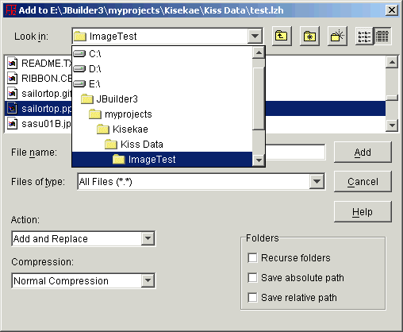

Welcome to the Kisekae Archive Manager program documentation. The Archive Manager Add Function is used to add new elements to an archive file. This document describes the Add options and features.
The Add function instructs the Archive Manager to add new file elements to the archive. The standard Add screen is shown in Figure 1.
Figure 1. Add Screen
Files must be selected to be added to an archive. The directory pop-down box, the scrollable directory tree list, and the icon buttons at the top of the Add screen all help navigate through your existing system directory structure to find the relevant files. Figure 2 shows how the directory pop-down box can be used to locate the appropriate directory that contains your files.

Figure 2. Directory Navigation
The directory tree list shows all files within the selected directory. Figure 3 illustrates how two files, sailortop.gif and sasu01b.jpg have been selected to be added to the current archive file. Files can be selected by clicking on their name in the directory tree list. To select multiple files hold the Ctrl key down while clicking with the mouse button. To select a set of consecutive files select the first file and then press the Shift key while clicking on a file entry further down in the list. To unselect a file click on a selected file with the Ctrl key down. Note that only the first element selected will show in the File Name field.

Figure 3. File Selection
The File Name field can be used to specify a specific file name or class of names to be added to the archive. An absolute file name such as 'C:\myfiles\kiss data\shirt.cel' can be used. A file name relative to the current directory can also be used. The wildcard character (*) can specify names that match a partial search pattern. Wildcards can be used as name prefixes or name suffixes for either the file name or file extension. For example, the pattern 'sailor*' will select all element names beginning with the characters 'sailor'. The pattern '*top' will select all element names ending with the characters 'top'. A stand alone wildcard character can be used to match with any name or extension. When using wildcard characters all files that match the criteria will be added to the archive file.
The Files of Type pop-down box is a control that can be used to filter files within the directory list to show only files of a particular type. File names can be filtered as text files, image files, or palette file types. Figure 4 shows a file name filter in use. When a filter is chosen the directory tree list will show only files that have the matching file name extension.

Figure 4. File Name Filtering
When element files are added to an existing archive file the elements can either unconditionally replace any existing archive element with the same name, or conditionally replace the archive element if the new element has changed since the archive was created. The Add and Replace option unconditionally replaces archive elements. Every selected element will replace any similarly named element in the archive.
When element files are added to an existing archive file the elements can either unconditionally replace any existing archive element with the same name, or conditionally replace the archive element if the new element has changed since the archive was created. The Add and Refresh option conditionally replaces archive elements. Selected elements will only replace a similarly named archive element if the new element has an update or creation date that is later than the date of the element in the archive. The Add and Refresh option prevents a later modified element from being replaced with an earlier version of the element.
New elements added to an archive file are normally compressed.
The No Compression option adds new elements to the archive without compressing the element data.
The Recurse Folders option is used to add all related elements from selected subordinate folders in the directory structure to the archive. If this option is set the Archive Manager will add the selected elements from the current directory, plus search all selected folders for additional elements matching the file name pattern or file type pattern identified in the File Selection area.
The Recurse Folders option is commonly used to add files from a complete directory tree to the archive. It is important to select the Save Absolute Path or Save Relative Path option when this is done. If these options are not set the added files will not contain path information and the directory structure cannot be recreated if elements from the archive file are subsequently extracted. For further information see the Extract Function document.
The Save Absolute Path option ensures that the element path information is retained in the archive for all files added. The absolute path is the full file name including all directory names from the root directory. If absolute path names are saved the files can be extracted from the archive and the original directory structure can be recreated on extraction. For further information see the Extract Function document.
The Save Relative Path option ensures that relative element path information is retained in the archive for all files added. The relative path is the full file name including all subordinate directory names from the current directory. If relative path names are saved the files can be extracted from the archive and a similar directory structure can be recreated within the selected directory on extraction. For further information see the Extract Function document.
The Add button initiate the archive file update. When files are added to an archive the complete archive file is rewritten. All new elements are added. All duplicate elements in the archive are replaced with the new files depending on the Add and Replace action or the Add and Refresh action setting. All other elements in the archive are retained in the new archive file.
The archive file update occurs as a background write activity. Figure 5 shows a write operation in progress. This operation can be cancelled if necessary. When the file update is complete the Archive Manager will display the contents of the updated archive file.

Figure 5. Archive File Write
The Cancel button closes the Add screen dialog without updating the archive file.
The Help button shows this online help document.
Next Document: Extract Function
Prior Document: Toolbar Commands
Copyright (c) 2002-2023 William Miles